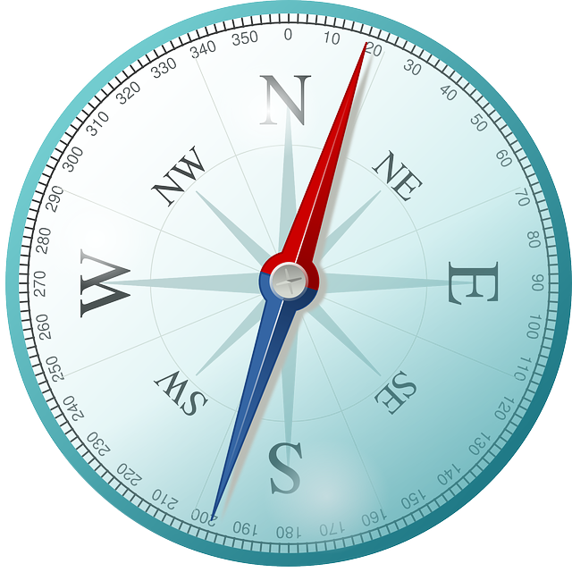

<!--
  Generated template for the FlightsPage page.

  See http://ionicframework.com/docs/components/#navigation for more info on
  Ionic pages and navigation.
-->
<ion-header>
  <ion-navbar>
 <ion-grid>
   <ion-row>
     <ion-col class='header-images'>
      
     </ion-col>
     <ion-col>
      <ion-title text-center class="titleicon">Flights</ion-title>
     </ion-col>
     <ion-col class='header-images'>
      
     </ion-col>
   </ion-row>
 </ion-grid>
</ion-navbar>
</ion-header>


<ion-content padding>

    <!-- <button ion-button block *ngFor='let flight of flights'>
      {{flight.id}}
    </button> -->
  <ion-grid>
    <ion-row ion-button color='secondary'*ngFor='let flight of flights' (click)='singleFlightClicked(flight.originAiroport, flight.destinationAiroport, flight.model, flight.logo)'>
      <ion-col >
        
        

      </ion-col>
      <ion-col>{{flight.manufacturer}}</ion-col>
      <ion-col>{{flight.altitude}}m</ion-col>
    </ion-row>
  </ion-grid>
</ion-content>


